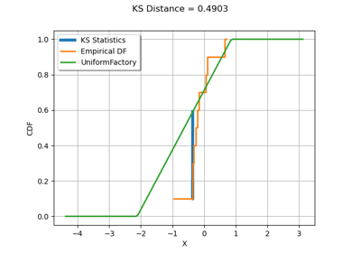
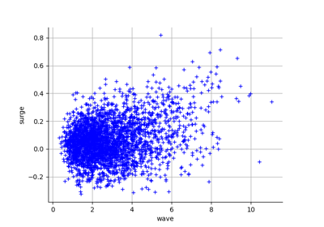
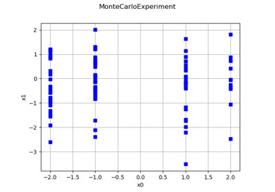

Sample¶
- class Sample(*args)¶
Sample of real vectors.
- Available constructors:
Sample(size, dim)
Sample(size, point)
Sample(other, first, last)
- Parameters:
- sizeint,
 , optional
, optional The sample size. Default creates an empty sample with dimension 1.
- dimensionint,
 , optional
, optional The real vectors dimension. Default creates an empty sample with dimension 1.
- point
Pointor flat (1d) array, list or tuple of floats, optional The point that will be repeated along the sample. Default creates a sample filled with zeros (null vectors).
- other
Sample The sample contains points to copy.
- firstint,

The index of the first point to copy.
- lastint,
 , optional
, optional The index after the last point to copy.
- sizeint,
See also
Examples
Create a Sample
>>> import openturns as ot >>> import numpy as np >>> sample = ot.Sample(3, 2) >>> print(sample) 0 : [ 0 0 ] 1 : [ 0 0 ] 2 : [ 0 0 ] >>> sample = ot.Sample(3, [1.0, 2.0]) >>> print(sample) 0 : [ 1 2 ] 1 : [ 1 2 ] 2 : [ 1 2 ]
Create a Sample from a (2d) array, list or tuple
>>> import numpy as np >>> sample = ot.Sample(np.array([(1.0, 2.0), (3.0, 4.0), (5.0, 6.0)]))
and back
>>> z = np.array(sample)
Eventually samples may also be generated from probability distributions or experiments
>>> random_sample = ot.Normal(2).getSample(10) >>> experiment = ot.LHSExperiment(ot.Normal(2), 10).generate()
Translation: addition or subtraction of a (compatible) sample or a point, or a scalar which is promoted into a point of compatible dimension with equal components
>>> print(sample + sample) 0 : [ 2 4 ] 1 : [ 6 8 ] 2 : [ 10 12 ] >>> print(sample - sample) 0 : [ 0 0 ] 1 : [ 0 0 ] 2 : [ 0 0 ] >>> print(sample - sample[0]) 0 : [ 0 0 ] 1 : [ 2 2 ] 2 : [ 4 4 ] >>> print(sample - sample[0, 0]) 0 : [ 0 1 ] 1 : [ 2 3 ] 2 : [ 4 5 ]
Methods
Convert a pandas DataFrame to Sample.
BuildFromPoint(point)Static method for building a sample from a sequence of float.
ImportFromCSVFile(*args)Static method for building a sample from a CSV file.
ImportFromTextFile(*args)Static method for building a sample from a text file.
add(*args)Append a sample (in-place).
argsort([isIncreasing])Returns indices of sorted sample.
Convert to pandas DataFrame.
asPoint()Accessor to the internal linear storage for 1D sample.
clear()Erase all values.
Estimate componentwise central moments.
Estimate the covariance matrix.
computeEmpiricalCDF(point[, tail])Estimate the empirical cumulative distribution function (ECDF).
Estimate the Kendall coefficients matrix.
Estimate the componentwise kurtosis (4th order central normalized moment).
(ditch me?)
Estimate the mean vector.
Estimate the componentwise medians (50%-quantiles).
Estimate the Pearson correlation matrix.
computeQuantile(*args)Estimate the quantile of the joint distribution underlying the sample.
computeQuantilePerComponent(*args)Estimate the componentwise quantiles.
Compute the range per component.
Compute the raw (non-central) moment per component.
Estimate the componentwise skewness (3rd order central normalized moment).
Estimate the Spearman correlation matrix.
Estimate the componentwise standard deviations.
Estimate the componentwise variances.
erase(*args)Erase point(s) at or between index(es) (in-place).
exportToCSVFile(*args)Dump the sample to a CSV file.
find(point)Get the position of a point in the sample.
Accessor to the object's name.
Accessor to the componentwise description.
Accessor to the sample's dimension.
getId()Accessor to the object's id.
Accessor to the underlying implementation.
getMarginal(*args)Accessor to sample marginal(s) (column(s)).
getMax()Accessor to the componentwise maximum values.
getMin()Accessor to the componentwise minimum values.
getName()Accessor to the object's name.
getSize()Accessor to the sample size.
rank(*args)Compute the sample (componentwise) ranks.
select(indices)Select points in a sample.
setDescription(description)Accessor to the componentwise description.
setName(name)Accessor to the object's name.
sort(*args)Sort the sample.
sortAccordingToAComponent(index)Sort the sample according to the given component.
Sort the sample in place according to the given component.
Sort the sample in place.
Sort the sample and remove duplicate points.
Sort the sample in place and remove duplicate points.
split(index)Trunk the sample.
stack(sample)Stack (horizontally) the given sample to the current one (in-place).
- __init__(*args)¶
- BuildFromDataFrame()¶
Convert a pandas DataFrame to Sample.
- Parameters:
- dfpandas DataFrame
The data to convert
- Returns:
- sample
Sample The converted sample
- sample
- static BuildFromPoint(point)¶
Static method for building a sample from a sequence of float.
- Parameters:
- data1d array-like
Data.
- Returns:
- sample
Sample Sample generated from sequence
- sample
Examples
>>> import openturns as ot >>> n = 20 >>> x = ot.Sample.BuildFromPoint(range(n)) >>> data = [2.0, 2.0, 1.0, 1.0, 2.0, 3.0, 1.0, 2.0, 2.0, 1.0] >>> sample = ot.Sample.BuildFromPoint(data)
- static ImportFromCSVFile(*args)¶
Static method for building a sample from a CSV file.
- Parameters:
- file_namestr
Path to CSV file.
- separatorstr
Separating string. Default uses csv-file-separator from the
ResourceMap.
- Returns:
- sample
Sample Sample loaded from the CSV file.
- sample
See also
Notes
The file may or may not contain a header line (columns spanned with strings delimited with quotes). If it does contain such a header line, it will be used for setting the sample description using
setDescription().The implementation follows the RFC 4180: https://tools.ietf.org/html/rfc4180.
Examples
>>> import openturns as ot
Let’s first create a sample CSV file
>>> ot.RandomGenerator.SetSeed(0) >>> sample = ot.Normal(2).getSample(30) >>> sample.exportToCSVFile('sample.csv')
And load it back
>>> loaded_sample = ot.Sample.ImportFromCSVFile('sample.csv') >>> assert sample == loaded_sample
- static ImportFromTextFile(*args)¶
Static method for building a sample from a text file.
- Parameters:
- file_namestr
Path to text file.
- separatorstr
Separating string. Default uses a blank space.
- skipped_linesint
Number of lines skipped. Default is 0.
- numSeparatorstr
Decimal separator. Default is dot.
- Returns:
- sample
Sample Sample loaded from the text file.
- sample
See also
Notes
The file may or may not contain a header line (columns spanned with strings delimited with quotes). If it does contain such a header line, it will be used for setting the sample description using
setDescription(). It can also contain some comments, if a line starts with one of the characters contained in Sample-CommentsMarker from theResourceMap.Examples
>>> import openturns as ot
Let’s first create a sample text file
>>> ot.RandomGenerator.SetSeed(0) >>> sample = ot.Normal(2).getSample(30) >>> sample.exportToCSVFile('sample.txt', ' ')
And load it back
>>> loaded_sample = ot.Sample.ImportFromTextFile('sample.txt') >>> assert sample == loaded_sample
- add(*args)¶
Append a sample (in-place).
- Parameters:
- point or samplesequence or 2-d sequence of float
The point(s) to append.
Examples
Append an existing sample with a single point.
>>> import openturns as ot >>> sample = ot.Sample(3, 2) >>> sample.add([1.0, 2.0]) >>> print(sample) 0 : [ 0 0 ] 1 : [ 0 0 ] 2 : [ 0 0 ] 3 : [ 1 2 ]
Append an existing sample with another sample.
>>> sample.add(ot.Sample(2, [2.0, 1.0])) >>> print(sample) 0 : [ 0 0 ] 1 : [ 0 0 ] 2 : [ 0 0 ] 3 : [ 1 2 ] 4 : [ 2 1 ] 5 : [ 2 1 ]
- argsort(isIncreasing=True)¶
Returns indices of sorted sample.
The algorithm sorts the points in the sample in the lexicographic order.
- Returns:
- indices
Indices The indices which sorts the sample.
- isIncreasingbool, optional
If True, sort in increasing order. If False, sort in decreasing order. Default is True.
- indices
Examples
>>> import openturns as ot >>> sample = ot.Sample( ... [[-1.0, 1.0, 0.0], [-1.0, 1.0, 1.0], [-1.0, 0.0, 1.0], [-1.0, 0.0, -1.0]] ... ) >>> print(sample) 0 : [ -1 1 0 ] 1 : [ -1 1 1 ] 2 : [ -1 0 1 ] 3 : [ -1 0 -1 ] >>> indices = sample.argsort() >>> print(indices) [3,2,0,1] >>> print(sample[indices]) [ v0 v1 v2 ] 0 : [ -1 0 -1 ] 1 : [ -1 0 1 ] 2 : [ -1 1 0 ] 3 : [ -1 1 1 ] >>> indices = sample.argsort(False) >>> print(indices) [1,0,2,3]
- asDataFrame()¶
Convert to pandas DataFrame.
- Returns:
- dfpandas DataFrame
The converted data
- asPoint()¶
Accessor to the internal linear storage for 1D sample.
- Returns:
- values
Point Flat internal representation of the sample.
- values
Notes
Available only for 1D sample.
Examples
>>> import openturns as ot >>> ot.RandomGenerator.SetSeed(0) >>> sample = ot.Normal().getSample(5) >>> print(sample) [ X0 ] 0 : [ 0.608202 ] 1 : [ -1.26617 ] 2 : [ -0.438266 ] 3 : [ 1.20548 ] 4 : [ -2.18139 ] >>> print(sample.asPoint()) [0.608202,-1.26617,-0.438266,1.20548,-2.18139]
- clear()¶
Erase all values.
- computeCentralMoment(k)¶
Estimate componentwise central moments.
- Parameters:
- kint
The central moment’s order.
- Returns:
- m
Point Componentwise central moment of order
 estimated from the sample.
estimated from the sample.
- m
Notes
The central moment of order
is estimated as follows:![\vect{\widehat{m}}^{(k)}_0 = \Tr{\left(\frac{1}{m}
\sum_{j=1}^m
\left(x_i^{(j)} - \widehat{\mu}_i\right)^k,
\quad i = 1, \ldots, n\right)}]()
where
 is the estimator of the mean.
is the estimator of the mean.These estimators are the natural (possibly biased) estimators. For unbiased estimators use the other dedicated methods such as
computeVariance()for the variance.Examples
>>> import openturns as ot >>> ot.RandomGenerator.SetSeed(0) >>> sample = ot.Normal(2).getSample(30) >>> print(sample.computeCentralMoment(2)) [0.915126,0.873119]
- computeCovariance()¶
Estimate the covariance matrix.
- Returns:
- covariance
CovarianceMatrix Covariance matrix estimated from the sample.
- covariance
Notes
The covariance matrix is estimated as follows:
![\mat{\widehat{\Sigma}} = \left[\frac{1}{m - 1}
\sum_{k=1}^m
\left(x_i^{(k)} - \widehat{\mu}_i\right)
\left(x_j^{(k)} - \widehat{\mu}_j\right),
\quad i, j = 1, \ldots, n\right]]()
where
denotes the estimate of the mean.This is an unbiased estimator.
Examples
>>> import openturns as ot >>> ot.RandomGenerator.SetSeed(0) >>> sample = ot.Normal(2).getSample(30) >>> print(sample.computeCovariance()) [[ 0.946682 0.0182104 ] [ 0.0182104 0.903226 ]]
- computeEmpiricalCDF(point, tail=False)¶
Estimate the empirical cumulative distribution function (ECDF).
- Parameters:
- xsequence of float
CDF input.
- survivalbool, optional
A flag telling whether this should estimate the empirical cumulative distribution function or the empirical survival function. Default is False and estimates the CDF.
- Returns:
- pfloat,

Empirical CDF or SF value at point x.
- pfloat,
Notes
The empirical cumulative distribution function (CDF) is estimated as follows:
![\hat{F}(\vect{x}) = \frac{1}{m} \sum_{j=1}^m
\mathbf{1}_{\cap_{i=1}^n x_i^{(j)} \leq x_i}(\vect{x})]()
The empirical survival function (SF) is estimated in a similar way:
![\hat{S}(\vect{x}) = \frac{1}{m} \sum_{j=1}^m
\mathbf{1}_{\cap_{i=1}^n x_i^{(j)} > x_i}(\vect{x})]()
Examples
>>> import openturns as ot >>> ot.RandomGenerator.SetSeed(0) >>> sample = ot.Normal(2).getSample(30) >>> print(sample.computeEmpiricalCDF(sample[0])) 0.1
- computeKendallTau()¶
Estimate the Kendall coefficients matrix.
- Returns:
- tau
CorrelationMatrix Kendall coefficients matrix estimated from the sample.
- tau
Notes
This uses an external implementation provided under the Boost Software License by David Simcha based on the paper by [knight1966]. It actually switches between two implementations depending on the sample size:
The most basic implementation performing in
 is used when
the sample size is less than SampleImplementation-SmallKendallTau
from the
is used when
the sample size is less than SampleImplementation-SmallKendallTau
from the ResourceMap.The other more complex implementation performing in
 is used for larger samples.
is used for larger samples.
Examples
>>> import openturns as ot >>> ot.RandomGenerator.SetSeed(0) >>> sample = ot.Normal(2).getSample(30) >>> print(sample.computeKendallTau()) [[ 1 0.00689655 ] [ 0.00689655 1 ]]
- computeKurtosis()¶
Estimate the componentwise kurtosis (4th order central normalized moment).
- Returns:
- kurtosis
Point Componentwise kurtosis estimated from the sample.
- kurtosis
Notes
The componentwise kurtosis are estimated as follows:
![\vect{\widehat{\kappa}} = \Tr{\left(\frac{m (m-1) (m+1)}{(m-2) (m-3)}
\frac{\sum_{j=1}^m
\left(x_i^{(j)} - \widehat{\mu}_i\right)^4}
{\left(\sum_{j=1}^m
\left(x_i^{(j)} - \widehat{\mu}_i\right)^2
\right)^2}
- 3 \frac{3 (m-5)}{(m-2) (m-3)},
\quad i = 1, \ldots, n\right)}]()
where
is the estimate of the mean.This estimator is unbiased.
Examples
>>> import openturns as ot >>> ot.RandomGenerator.SetSeed(0) >>> sample = ot.Normal(2).getSample(30) >>> print(sample.computeKurtosis()) [3.27647,2.40275]
- computeLinearCorrelation()¶
(ditch me?)
- computeMean()¶
Estimate the mean vector.
- Returns:
- mean
Point Mean vector estimated from the sample.
- mean
Notes
The mean is estimated as follows:
![\vect{\widehat{\mu}} = \Tr{\left(\frac{1}{m}
\sum_{j=1}^m x_i^{(j)},
\quad i = 1, \ldots, n\right)}]()
Examples
>>> import openturns as ot >>> ot.RandomGenerator.SetSeed(0) >>> sample = ot.Normal(2).getSample(30) >>> print(sample.computeMean()) [-0.0512622,0.136653]
- computeMedian()¶
Estimate the componentwise medians (50%-quantiles).
- Returns:
- median
Point Median vector estimated from the sample.
- median
See also
Examples
>>> import openturns as ot >>> ot.RandomGenerator.SetSeed(0) >>> sample = ot.Normal(2).getSample(30) >>> print(sample.computeMedian()) [0.221141,0.108703]
- computePearsonCorrelation()¶
Estimate the Pearson correlation matrix.
- Returns:
- rho
CorrelationMatrix Pearson correlation matrix estimated from the sample.
- rho
Notes
The Pearson correlation matrix is estimated as follows:
![\mat{\widehat{\rho}} = \left[\frac{\widehat{\Sigma}_{i,j}}
{\widehat{\Sigma}_{i,i} \widehat{\Sigma}_{j,j}},
\quad i,j = 1, \ldots, n\right]]()
where
 denotes the estimate of the covariance.
denotes the estimate of the covariance.Examples
>>> import openturns as ot >>> ot.RandomGenerator.SetSeed(0) >>> sample = ot.Normal(2).getSample(30) >>> print(sample.computePearsonCorrelation()) [[ 1 0.0196933 ] [ 0.0196933 1 ]]
- computeQuantile(*args)¶
Estimate the quantile of the joint distribution underlying the sample.
- Parameters:
- pfloat, , or sequence of float
Input probability level.
- pfloat,
- Returns:
- Raises:
- NotImplementedYetErrorIf the dimension is greater than 1.
See also
Examples
>>> import openturns as ot >>> ot.RandomGenerator.SetSeed(0) >>> sample = ot.Normal(1).getSample(30) >>> print(sample.computeQuantile(.2)) [-0.947394]
- computeQuantilePerComponent(*args)¶
Estimate the componentwise quantiles.
- Parameters:
- pfloat, , or sequence of float
Input probability level.
- pfloat,
- Returns:
Notes
The present implementation interpolates the quantile between the two adjacent empirical quantiles (
 and
and  ):
):
where
 .
.Examples
>>> import openturns as ot >>> ot.RandomGenerator.SetSeed(0) >>> sample = ot.Normal(2).getSample(30) >>> print(sample.computeQuantilePerComponent(0.2)) [-0.696412,-0.767092]
- computeRange()¶
Compute the range per component.
- Returns:
- range
Point Componentwise ranges estimated from the sample.
- range
Notes
The statistical range is defined as the deviation between the maximal and the minimal value of the sample.
Examples
>>> import openturns as ot >>> ot.RandomGenerator.SetSeed(0) >>> sample = ot.Normal(2).getSample(30) >>> print(sample.computeRange()) [4.02827,3.49949]
- computeRawMoment(k)¶
Compute the raw (non-central) moment per component.
- Parameters:
- kint,

Componentwise moment’s order.
- kint,
- Returns:
- moments
Point Componentwise moments estimated from the sample.
- moments
Notes
The (raw) moment of order
is estimated as follows:![\vect{\widehat{m}}^{(k)} = \Tr{\left(\frac{1}{m}
\sum_{j=1}^m {x_i^{(j)}}^k,
\quad i = 1, \ldots, n\right)}]()
Examples
>>> import openturns as ot >>> ot.RandomGenerator.SetSeed(0) >>> sample = ot.Normal(2).getSample(30) >>> print(sample.computeRawMoment(2)) [0.917754,0.891793]
- computeSkewness()¶
Estimate the componentwise skewness (3rd order central normalized moment).
- Returns:
- skewness
Point Componentwise skewness estimated from the sample.
- skewness
Notes
The componentwise skewnesses are estimated as follows:
![\vect{\widehat{\delta}} = \Tr{\left(m \frac{\sqrt{m-1}}{m-2}
\frac{\sum_{j=1}^m
\left(x_i^{(j)} - \widehat{\mu}_i\right)^3}
{\left(\sum_{j=1}^m
\left(x_i^{(j)} - \widehat{\mu}_i\right)^2
\right)^{3/2}},
\quad i = 1, \ldots, n\right)}]()
where
is the estimate of the mean.This is an unbiased estimator.
Examples
>>> import openturns as ot >>> ot.RandomGenerator.SetSeed(0) >>> sample = ot.Normal(2).getSample(30) >>> print(sample.computeSkewness()) [-0.69393,0.231931]
- computeSpearmanCorrelation()¶
Estimate the Spearman correlation matrix.
- Returns:
- rho
CorrelationMatrix Spearman correlation matrix estimated from the sample.
- rho
See also
Notes
The Spearman correlation matrix is estimated as the Pearson correlation matrix of the ranks sample (i.e. using self.rank().computePearsonCorrelation()).
Examples
>>> import openturns as ot >>> ot.RandomGenerator.SetSeed(0) >>> sample = ot.Normal(2).getSample(30) >>> print(sample.computeSpearmanCorrelation()) [[ 1 -0.00556174 ] [ -0.00556174 1 ]]
- computeStandardDeviation()¶
Estimate the componentwise standard deviations.
- Returns:
- standard_deviations
Point Componentwise standard deviation estimated from the sample.
- standard_deviations
See also
Notes
The componentwise standard deviations are estimated as the square root of the componentwise variances.
Examples
>>> import openturns as ot >>> ot.RandomGenerator.SetSeed(0) >>> sample = ot.Normal(2).getSample(30) >>> print(sample.computeStandardDeviation()) [0.972976,0.950382]
- computeVariance()¶
Estimate the componentwise variances.
- Returns:
- variances
Point Componentwise variances estimated from the sample.
- variances
Notes
The componentwise variances are estimated as follows:
![\vect{\widehat{\sigma^2}} = \Tr{\left(\frac{1}{m-1}
\sum_{j=1}^m
\left(x_i^{(j)} - \widehat{\mu}_i\right)^2,
\quad i = 1, \ldots, n\right)}]()
where
is the estimate of the mean.This estimator is unbiased.
Examples
>>> import openturns as ot >>> ot.RandomGenerator.SetSeed(0) >>> sample = ot.Normal(2).getSample(30) >>> print(sample.computeVariance()) [0.946682,0.903226]
- erase(*args)¶
Erase point(s) at or between index(es) (in-place).
- Parameters:
- fint,

The index of the first point to erase.
- lint,
 , optional
, optional The index after the last point to erase. Default uses l = f + 1 and only removes sample[f].
- fint,
Examples
>>> import openturns as ot >>> sample = ot.Sample([[i] for i in range(5)]) >>> print(sample) 0 : [ 0 ] 1 : [ 1 ] 2 : [ 2 ] 3 : [ 3 ] 4 : [ 4 ] >>> sample.erase(1, 3) >>> print(sample) 0 : [ 0 ] 1 : [ 3 ] 2 : [ 4 ]
- exportToCSVFile(*args)¶
Dump the sample to a CSV file.
- Parameters:
- file_namestr
Path to CSV file.
- separatorstr
Separating string. Default uses csv-file-separator from the
ResourceMap.- numSeparatorstr, default=’.’
Decimal separator.
- precisionint
Numerical precision Default takes Sample-CSVPrecision entry from
ResourceMap.- formatstr
Floating-point formatting, one of:
scientific: exponent notation
fixed: constant number of digits
defaultfloat: variable number of digits
Default takes Sample-CSVFormat entry from
ResourceMap.
See also
Notes
This will create a header line with componentwise descriptions (obtained from
getDescription()) between quotes as column names. In scientific formatting the number of significant digits is .
.Examples
>>> import openturns as ot >>> ot.RandomGenerator.SetSeed(0) >>> sample = ot.Normal(2).getSample(30) >>> sample.exportToCSVFile('sample.csv', '; ')
- find(point)¶
Get the position of a point in the sample.
- Parameters:
- pointsequence of float
The wanted point.
- Returns:
- indexint,
Returns
 if the point does not belong to the sample.
if the point does not belong to the sample.
Examples
>>> import openturns as ot >>> ot.RandomGenerator.SetSeed(0) >>> sample = ot.Normal(2).getSample(30) >>> print(sample.find(sample[10])) 10 >>> print(sample.find([0.0, 0.0])) 30
- getClassName()¶
Accessor to the object’s name.
- Returns:
- class_namestr
The object class name (object.__class__.__name__).
- getDescription()¶
Accessor to the componentwise description.
- Returns:
- description
Description Description of the sample’s components.
- description
See also
- getDimension()¶
Accessor to the sample’s dimension.
- Returns:
- nint
The number of components of the points in the sample.
- getId()¶
Accessor to the object’s id.
- Returns:
- idint
Internal unique identifier.
- getImplementation()¶
Accessor to the underlying implementation.
- Returns:
- implImplementation
A copy of the underlying implementation object.
- getMarginal(*args)¶
Accessor to sample marginal(s) (column(s)).
- Parameters:
- indicesint, sequence of int,
 or sequence of str
or sequence of str The identifiers of the wanted marginal(s). When the description contains duplicate labels, the first marginal is picked up.
- indicesint, sequence of int,
- Returns:
- sample
Sample A subsample of the present sample with the requested marginal(s).
- sample
Notes
The
Samplealso implements slicing in its __getitem__ method.Examples
>>> import openturns as ot >>> ot.RandomGenerator.SetSeed(0) >>> sample = ot.Normal(10).getSample(3) >>> print(sample.getMarginal([1, 4])) [ X1 X4 ] 0 : [ -1.26617 -2.18139 ] 1 : [ 0.261018 -1.31178 ] 2 : [ 0.445785 0.473617 ]
- getMax()¶
Accessor to the componentwise maximum values.
- Returns:
- maximum_values
Point Componentwise maximum values.
- maximum_values
- getMin()¶
Accessor to the componentwise minimum values.
- Returns:
- minimum_values
Point Componentwise minimum values.
- minimum_values
- getName()¶
Accessor to the object’s name.
- Returns:
- namestr
The name of the object.
- getSize()¶
Accessor to the sample size.
- Returns:
- mint
The number points in the sample.
- rank(*args)¶
Compute the sample (componentwise) ranks.
- Parameters:
- marginal_indexint, , optional
The component whose ranks are wanted. Default computes the ranks of all the components.
- marginal_indexint,
- Returns:
- ranks
Sample The requested ranks.
- ranks
Notes
The ranks of a 1d sample is a list of indices that sorts the points in the ascending order. Ties (equal points) are averaged.
Examples
>>> import openturns as ot >>> ot.RandomGenerator.SetSeed(0) >>> sample = ot.Normal(2).getSample(3) >>> print(sample) [ X0 X1 ] 0 : [ 0.608202 -1.26617 ] 1 : [ -0.438266 1.20548 ] 2 : [ -2.18139 0.350042 ] >>> print(sample.rank()) [ X0 X1 ] 0 : [ 2 0 ] 1 : [ 1 2 ] 2 : [ 0 1 ]
- select(indices)¶
Select points in a sample.
It selects the points at given locations and returns them as a new sample.
- Parameters:
- indicessequence of int,

The selected indices.
- indicessequence of int,
- Returns:
- selected_sample
Sample The selected points as a sample.
- selected_sample
Examples
>>> import openturns as ot >>> ot.RandomGenerator.SetSeed(0) >>> sample = ot.Normal(2).getSample(3) >>> print(sample) [ X0 X1 ] 0 : [ 0.608202 -1.26617 ] 1 : [ -0.438266 1.20548 ] 2 : [ -2.18139 0.350042 ] >>> selected_sample = sample.select([1, 0, 1]) >>> print(selected_sample) [ X0 X1 ] 0 : [ -0.438266 1.20548 ] 1 : [ 0.608202 -1.26617 ] 2 : [ -0.438266 1.20548 ]
- setDescription(description)¶
Accessor to the componentwise description.
- Parameters:
- descriptionsequence of str
Description of the sample’s components.
See also
- setName(name)¶
Accessor to the object’s name.
- Parameters:
- namestr
The name of the object.
- sort(*args)¶
Sort the sample.
The ordering is based on the comparison operator of the
Point. Hence, the sort method orders the points in the sample according to lexicographic order.- Parameters:
- marginal_indexint, , optional
The index of the component to sort. Default sorts the whole sample, i.e. the returned sorted sample has the same dimension as the input sample. If marginal_index is provided, then the returned sorted sample has dimension 1: the corresponding marginal sample is sorted and returned.
- marginal_indexint,
- Returns:
- sorted_sample
Sample The requested sorted sample.
- sorted_sample
Examples
>>> import openturns as ot >>> ot.RandomGenerator.SetSeed(0) >>> sample = ot.Normal(2).getSample(3) >>> print(sample) [ X0 X1 ] 0 : [ 0.608202 -1.26617 ] 1 : [ -0.438266 1.20548 ] 2 : [ -2.18139 0.350042 ] >>> print(sample.sort()) [ X0 X1 ] 0 : [ -2.18139 0.350042 ] 1 : [ -0.438266 1.20548 ] 2 : [ 0.608202 -1.26617 ] >>> print(sample.sort(1)) 0 : [ -1.26617 ] 1 : [ 0.350042 ] 2 : [ 1.20548 ]
In the following sample, the first component of all points is equal to -1, which creates a tie where the other components must be used to make a difference in the comparison. The algorithm sorts the points taking into account all the components in the points. This shows that the algorithm uses lexicographic ordering, since using only the first component would leave the sample unchanged.
>>> import openturns as ot >>> sample = ot.Sample( ... [[-1.0, 1.0, 1.0], [-1.0, 1.0, 0.0], [-1.0, 0.0, 1.0], [-1.0, 0.0, -1.0]] ... ) >>> print(sample) 0 : [ -1 1 1 ] 1 : [ -1 1 0 ] 2 : [ -1 0 1 ] 3 : [ -1 0 -1 ] >>> print(sample.sort()) 0 : [ -1 0 -1 ] 1 : [ -1 0 1 ] 2 : [ -1 1 0 ] 3 : [ -1 1 1 ]
- sortAccordingToAComponent(index)¶
Sort the sample according to the given component.
- Parameters:
- marginal_indexint,
The component to use for sorting the sample.
- marginal_indexint,
- Returns:
- sorted_sample
Sample The sample sorted according to the given component.
- sorted_sample
Examples
>>> import openturns as ot >>> ot.RandomGenerator.SetSeed(0) >>> sample = ot.Normal(2).getSample(3) >>> print(sample) [ X0 X1 ] 0 : [ 0.608202 -1.26617 ] 1 : [ -0.438266 1.20548 ] 2 : [ -2.18139 0.350042 ] >>> print(sample.sortAccordingToAComponent(0)) [ X0 X1 ] 0 : [ -2.18139 0.350042 ] 1 : [ -0.438266 1.20548 ] 2 : [ 0.608202 -1.26617 ]
- sortAccordingToAComponentInPlace(index)¶
Sort the sample in place according to the given component.
- Parameters:
- marginal_indexint,
The component to use for sorting the sample.
- marginal_indexint,
Examples
>>> import openturns as ot >>> ot.RandomGenerator.SetSeed(0) >>> sample = ot.Normal(2).getSample(3) >>> print(sample) [ X0 X1 ] 0 : [ 0.608202 -1.26617 ] 1 : [ -0.438266 1.20548 ] 2 : [ -2.18139 0.350042 ] >>> sample.sortAccordingToAComponentInPlace(0) >>> print(sample) [ X0 X1 ] 0 : [ -2.18139 0.350042 ] 1 : [ -0.438266 1.20548 ] 2 : [ 0.608202 -1.26617 ]
- sortInPlace()¶
Sort the sample in place.
Examples
>>> import openturns as ot >>> ot.RandomGenerator.SetSeed(0) >>> sample = ot.Normal(2).getSample(3) >>> print(sample) [ X0 X1 ] 0 : [ 0.608202 -1.26617 ] 1 : [ -0.438266 1.20548 ] 2 : [ -2.18139 0.350042 ] >>> sample.sortInPlace() >>> print(sample) [ X0 X1 ] 0 : [ -2.18139 0.350042 ] 1 : [ -0.438266 1.20548 ] 2 : [ 0.608202 -1.26617 ]
- sortUnique()¶
Sort the sample and remove duplicate points.
- Returns:
- unique_sample
Sample The requested sorted sample with duplicate points removed.
- unique_sample
Examples
>>> import openturns as ot >>> sample = ot.Sample([[3, 0, 3], [1, 1, 0], [0, 2, 2], [1, 1, 0]]) >>> print(sample) 0 : [ 3 0 3 ] 1 : [ 1 1 0 ] 2 : [ 0 2 2 ] 3 : [ 1 1 0 ] >>> print(sample.sortUnique()) 0 : [ 0 2 2 ] 1 : [ 1 1 0 ] 2 : [ 3 0 3 ]
- sortUniqueInPlace()¶
Sort the sample in place and remove duplicate points.
Examples
>>> import openturns as ot >>> sample = ot.Sample([[3, 0, 3], [1, 1, 0], [0, 2, 2], [1, 1, 0]]) >>> print(sample) 0 : [ 3 0 3 ] 1 : [ 1 1 0 ] 2 : [ 0 2 2 ] 3 : [ 1 1 0 ] >>> sample.sortUniqueInPlace() >>> print(sample) 0 : [ 0 2 2 ] 1 : [ 1 1 0 ] 2 : [ 3 0 3 ]
- split(index)¶
Trunk the sample.
It splits the sample before the index passed as argument and returns the remainder as new sample.
- Parameters:
- indexint,
The truncation index.
- indexint,
- Returns:
- remainder_sample
Sample The remainder sample (everything that comes after the truncation index).
- remainder_sample
Examples
>>> import openturns as ot >>> ot.RandomGenerator.SetSeed(0) >>> sample = ot.Normal(2).getSample(3) >>> print(sample) [ X0 X1 ] 0 : [ 0.608202 -1.26617 ] 1 : [ -0.438266 1.20548 ] 2 : [ -2.18139 0.350042 ] >>> remainder_sample = sample.split(1) >>> print(sample) [ X0 X1 ] 0 : [ 0.608202 -1.26617 ] >>> print(remainder_sample) [ X0 X1 ] 0 : [ -0.438266 1.20548 ] 1 : [ -2.18139 0.350042 ]
- stack(sample)¶
Stack (horizontally) the given sample to the current one (in-place).
- Parameters:
- sample
Sample Sample to stack with compatible size.
- sample
Examples
>>> import openturns as ot >>> ot.RandomGenerator.SetSeed(0) >>> sample = ot.Normal(2).getSample(3) >>> print(sample) [ X0 X1 ] 0 : [ 0.608202 -1.26617 ] 1 : [ -0.438266 1.20548 ] 2 : [ -2.18139 0.350042 ] >>> another_sample = ot.Normal(2).getSample(3) >>> print(another_sample) [ X0 X1 ] 0 : [ -0.355007 1.43725 ] 1 : [ 0.810668 0.793156 ] 2 : [ -0.470526 0.261018 ] >>> sample.stack(another_sample) >>> print(sample) [ X0 X1 X0 X1 ] 0 : [ 0.608202 -1.26617 -0.355007 1.43725 ] 1 : [ -0.438266 1.20548 0.810668 0.793156 ] 2 : [ -2.18139 0.350042 -0.470526 0.261018 ]
 ,
estimated from the sample.
,
estimated from the sample.Examples using the class¶


A quick start guide to the Point and Sample classes



Kolmogorov-Smirnov : understand the statistics


Kolmogorov-Smirnov : get the statistics distribution



Estimate tail dependence coefficients on the wave-surge data

Estimate tail dependence coefficients on the wind data


Apply a transform or inverse transform on your polynomial chaos


Create a polynomial chaos metamodel by integration on the cantilever beam


Create a polynomial chaos for the Ishigami function: a quick start guide to polynomial chaos


Example of multi output Kriging on the fire satellite model


Estimate a probability with Monte-Carlo on axial stressed beam: a quick start guide to reliability


Use the FORM algorithm in case of several design points

Non parametric Adaptive Importance Sampling (NAIS)


Test the design point with the Strong Maximum Test


An illustrated example of a FORM probability estimate


Estimate Sobol indices on a field to point function


Estimate Sobol’ indices for a function with multivariate output


Example of sensitivity analyses on the wing weight model


Create mixed deterministic and probabilistic designs of experiments

Create a design of experiments with discrete and continuous variables


Defining Python and symbolic functions: a quick start introduction to functions


Define a function with a field output: the viscous free fall example


Calibrate a parametric model: a quick-start guide to calibration

Generate observations of the Chaboche mechanical model


Linear Regression with interval-censored observations


Compute leave-one-out error of a polynomial chaos expansion

Compute confidence intervals of a regression model from data

Compute confidence intervals of a univariate noisy function


Plot the log-likelihood contours of a distribution